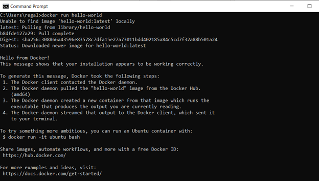
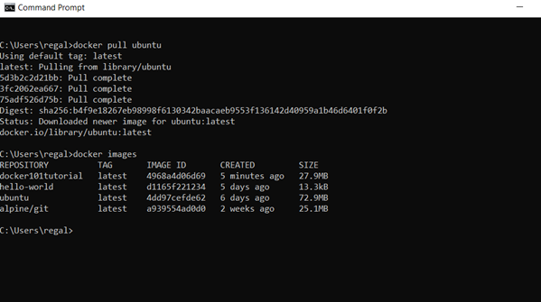

Tutorial: How to Setup a Web Server on your Local Computer Using Docker
This tutorial will show you how to create a web server image which can be used to build containers. We will use the Apache Web Server on ubuntu to create this image. Please follow the steps below!:
1. Install Docker Engine
Use these links to install:
https://docs.docker.com/engine/install/ https://docs.docker.com/get-docker/After the installation, run "docker run hello-world" to ensure installation is complete. The screenshot below demonstrates the successful result of this command:
2. Pull an Ubuntu image from Dockerhub
After you are logged into Docker, run "docker pull ubuntu". Then, use "docker images" to check existing images on your computer.
3. How to commit changes to a docker image with examples
Run the Ubuntu image to start a Docker container, then log into this Ubuntu container using this command: "docker run -it ubuntu:latest /bin/bash

Note: The container ID is “1ee65e9d5595” in the screenshot.
Install applications in this Ubuntu container.
1. Update system using "apt-get update"

2. Install apache2 using "apt-get install apache2"

3. Install vim text editor using "apt-get install vim"

Exit Ubuntu container using command "exit"

Commit container to create a new Docker image
1. Check the container using "docker ps-a"

2. Create a new Docker image using “docker commit 1ee65e9d5595 ubuntu-my_apache2”. “1ee65e9d5595” is the container ID and “ubuntu-my_apache2” is the name of a new Docker image.

3. Check the news images using “docker images”

4. Docker Basics: How to Share Data Between a Docker Container and Host
Using command “docker run -it -p 127.0.0.1:80:80 -v H:\Docker_tutorial\local_dir:/var/www/html ubuntu-my_apache2 /bin/bash”. Parameter explanation:
1. -it: log into an interactive shell
2. -p: expose an port of Docker container
3. -v: bind a host directory to Docker container. “H:\Docker_tutoiral\local_dir” is a directory of the host computer, and “/var/www/htm” is the default location for the entry webpage of a website. Usually we put “index. Html” is this directory.

5. vi Editor in Unix
Check the present working directory using “pwd” then go the html directory “/var/www/htm” using “cd /var/www/html”

Create an “index.html” file using “vi index.html”. Press “i” key to edit the new “index. Html” file. You can see “-- INSERT --” in the bottom of the command window, which means you can type html source code now. Try the shortcuts of vi to edit your file.

After finishing your “index.html” file, press the “ESC” key of your computer then type “:wq” to write the file and then quit vi.

Meanwhile, you can find your “index.html” in your bind directory on your computer.

6. How to use Docker to host a website
Start apache service using “/etc/init.d/apache2 restart” in your Docker container
Using a browser of you host computer to access “127.0.0.1”, then you can see your website!